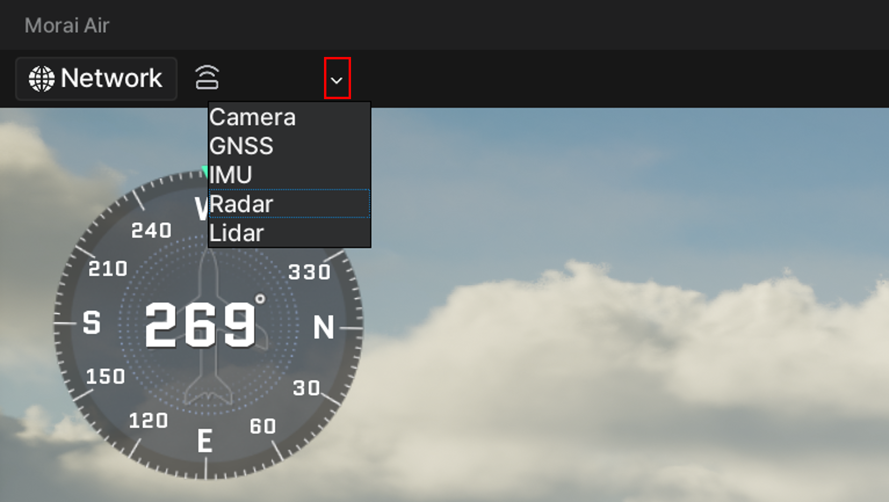

Sensor Settings
This section describes how to place each sensor provided by the simulator on the aircraft and set the sensor parameters to obtain sensor data.
Sensor Placement
Place the sensors on the aircraft in the order below.
1) Click ∨ on the right side of the sensor icon in the menu at the top left as shown below.

2) When you select a sensor to be placed in the popped-up sensor list, the following Sensor Settings window appears on the right.
Ex) When selecting Camera
3) When you click the mouse on the position of the aircraft where you want to place the sensor, the corresponding sensor item is created in Sensor Settings.
Ex) When placing Camera

Adding sensors or placing different types of sensors
The method of adding the same type of sensor or placing a different type of sensor is the same as the sensor placement method 1) to 3) above.
Deleting placed sensors
In Sensor Settings on the right, click ... of the sensor item you want to delete and click Delete.
Ex) When deleting Camera
The method for deleting other types of sensors is the same as above.
Sensor Parameter Setting
In the sensor parameter setting, the parameters for the location coordinates (x, y, z) and posture (rotation angle of roll, pitch, and yaw) of the placed sensor and the specialized functions supported by each sensor model are set.
When you click the created sensor item name (eg. Camera-0), the parameter setting window for the corresponding sensor appears as shown below.
Ex) Parameter setting window for Camera
Location Coordinates
The location coordinates of all sensors provided by the simulator are set based on the aircraft coordinate system below.
Lens Distortion of Camera
The Lens Distortion effect reproduces the appearance of a real camera lens by distorting the final rendered image.
The simulator's camera sensor model provides Lens Distortion as shown below.
The setting parameter for lens distortion is as follows:
- K1, K2, K3: parameters related to radial distortion, simulating the phenomenon of radial distortion by the refractive index of a convex lens
- P1, P2: Parameter for making sensor attachment errors that occur during the camera assembly process
Gaussian Noise of GNSS
The simulator's GPS sensor model supports Gaussian Noise as shown below.
The value of Gaussian Noise is adjusted by entering Mean(m) and Stdev(%) values.
Network Settings
The network of the sensor model provided by the simulator only sets UDP communication as shown below.
For information on how to set up a sensor network, see the Sending Sensor Messages section.